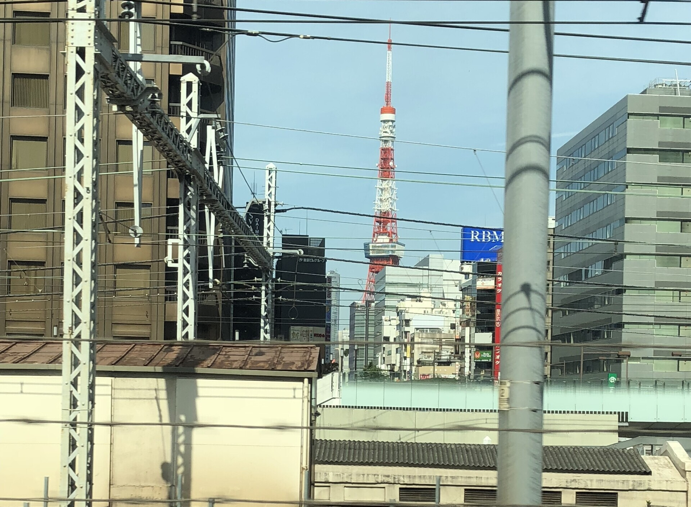

- Bereich
- Tokio → Shinagawa
- Sitzseite
- Tokyo Tower: E / Rainbow Bridge: A
- Zeitpunkt
- Tokyo Tower: etwa 3 Min. ab Tokyo; die Brücke erscheint an anderer Stelle
- Sichtdauer
- Wenige SekundenFür Tokyo Tower; abhängig von Zug, Geschwindigkeit und Gebäuden.
DIE GESCHICHTE
Eine Stadt, verbunden durch Bahn, Rundfunk und Bucht
Die roten Backsteine des Bahnhofs Tokyo liegen unter einer Silhouette viel höherer Gebäude. Der 1914 als Tor zwischen Bahnstrecken eröffnete Marunouchi-Bau gehört noch immer zu einem Bahnhof in Betrieb. Zwischen Tokyo und Shinagawa stehen Gebäude aus verschiedenen Epochen nebeneinander.
Tokyo Tower wurde 1958 als 333 Meter hoher Sendeturm fertiggestellt. Seine Höhe sollte die Rundfunkversorgung der Region Kanto ermöglichen; dieser praktische Zweck gab Tokyo zugleich ein weithin sichtbares Wahrzeichen. Neben seinen Aussichtsplattformen hat der Turm dazu beigetragen, Informationen in den Alltag der Menschen zu bringen.
Auf der Seite der Bucht überspannt die Rainbow Bridge den Hafen von Tokyo. Die 1993 eröffnete Hängebrücke verbindet Shibaura mit Daiba. Die senkrechte Silhouette des Turms und die geschwungenen Brückenseile bilden zwei ganz unterschiedliche Formen zwischen den Gebäuden der Stadt.
Tokyo Tower liegt auf der Seite von Platz E, die Rainbow Bridge auf der Seite von Platz A. Die Sitzplatzbuchstaben bleiben in beiden Fahrtrichtungen gleich.
WAS SIE SEHEN
Nach diesen Wahrzeichen Tokyos können Sie Ausschau halten
Folgen Sie den Ansichten vom Bahnhof Tokyo nach Shinagawa: Bahnhofsdächer, die Spiegelung Ihres Zuges im Glas, Tokyo Tower und eine ferne Brücke. Ein letztes Foto zeigt die Hochhäuser kurz hinter Shinagawa. Die richtige Fensterseite hängt vom jeweiligen Wahrzeichen ab.
Bahnhof Tokyo: roter Backstein hinter den Bahnsteigen
In der Mitte dieses Fotos von der Seite von Platz E ist das niedrige rote Backsteingebäude jenseits der Gleise der Marunouchi-Bau des Bahnhofs Tokyo. Sein abgerundetes Dach und seine kleinen Details bilden einen Kontrast zu den rechteckigen Türmen dahinter. Dies ist ein Blick aus dem Bahngelände, nicht die bekannte vollständige Fassade vom Bahnhofsvorplatz.
Ein Blick auf die Burg Edo zwischen den Gebäuden
Kurz südlich des Bahnhofs Tokyo erscheint am Ende einer Straße ein weißer Burgturm. Achten Sie auf drei Dachebenen vor den Bäumen des Kaiserpalastgeländes. Ein eigener Beitrag stellt dieses Überbleibsel der Burg Edo zwischen modernen Gebäuden vor.
Yurakucho: Ihr Zug spiegelt sich im Glas
Die Gebäude direkt an den Gleisen können genauso interessant sein wie die höchsten Türme. Auf diesem Foto von Yurakucho Marui erscheint der helle Wagenkasten des Zuges in einer Fensterreihe. Vergleichen Sie die breiten Wände, Glasbänder und höheren Gebäude dahinter, um die räumliche Tiefe der Stadt zu erkennen. Spiegelungen hängen von Licht und Blickwinkel ab und sehen deshalb nicht auf jeder Fahrt gleich aus.
Tokyo Tower: eine rote Linie zwischen Gebäuden
Suchen Sie in einer Lücke zwischen den Gebäuden nach einem schlanken rot-weißen Gitterturm. Achten Sie lieber auf die Antenne und die vorspringende Aussichtsplattform, statt den Turmfuß zu erwarten. Nach Einbruch der Dunkelheit zeichnet die Beleuchtung seine Umrisse nach; Farben und Lichtprogramme ändern sich je nach Datum.
Rainbow Bridge: ein ferner Blick von Platz A
Auf dem Tagesfoto erscheinen rechts im Hintergrund zwei weiße Pylone und die dazwischen geschwungenen Seile. Dächer und technische Anlagen füllen den Vordergrund, links stehen hohe Wohngebäude. Gesucht ist die Brückensilhouette hinter der Stadt, kein freies Panorama von Brücke und Bucht.
Nachts heben sich die beiden getrennt stehenden Pylone weiß hervor. Diese Ansicht liegt auf der gegenüberliegenden Seite von Tokyo Tower und erscheint an einer anderen Stelle. Schauen Sie zwischen Shinagawa und Tamachi auf die Seite von Platz A.
Hinter Shinagawa: die Hochhäuser setzen sich fort
Die Hochhaussilhouette setzt sich direkt hinter Shinagawa fort.
AUF DER KARTE
Standort auf einen Blick
Karte öffnenZwischen der Sehenswürdigkeit und dem Aussichtspunkt im Shinkansen wechseln.
IHR GUIDE FÜR UNTERWEGS
Verpassen Sie nicht den Ausblick
Für Tokyo Tower schauen Sie nach der Abfahrt in Tokyo auf die Seite von Platz E, Richtung Tokyo nach der Abfahrt in Shinagawa. Die Durchfahrtszeiten und die Karte beziehen sich auf Tokyo Tower. Die Rainbow Bridge ist eine eigene Ansicht auf der Seite von Platz A zwischen Shinagawa und Tamachi. Bahnhof Tokyo und Fujimi-Burgturm liegen auf der Seite von Platz E, kurz nach der Abfahrt in Tokyo oder kurz vor der Ankunft dort.
IM VORBEIFAHREN
Tokyo Tower im Vorbeifahren
Der Turm erscheint nur wenige Sekunden zwischen den Gebäuden. Diese Videos zeigen, wie schnell er auftaucht und wieder verschwindet – und warum er nachts leichter zu entdecken ist.
Von Platz E: die wenigen Sekunden, in denen der rote Turm in eine Lücke zwischen Gebäuden rückt.
An Bord des Sparkling Dreams Shinkansen: die Nachtfahrt von Shinagawa nach Tokio, ungeschnitten.
Diese Videos verwenden die offizielle YouTube-Einbettung.
WEITERFÜHRENDE LEKTÜRE
Quellen
Offizielle Informationen und Aufzeichnungen von Ausblicken.